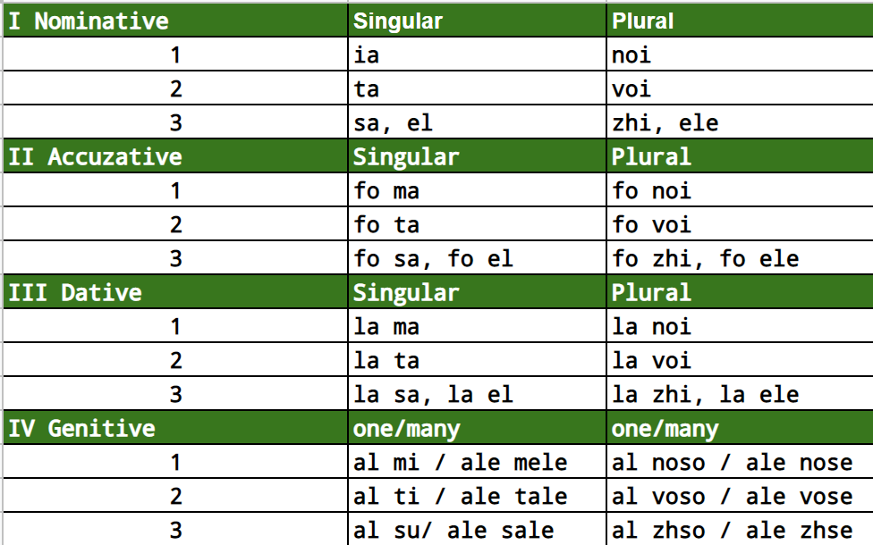
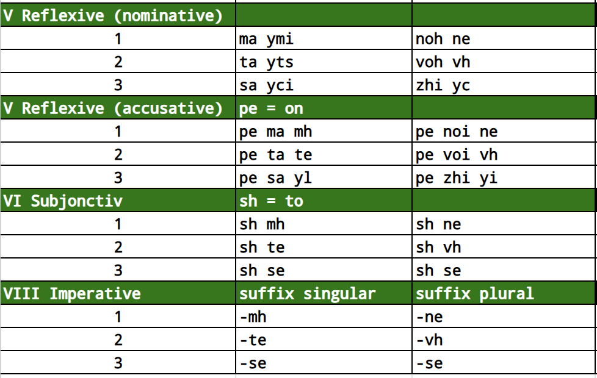

index<--
Maj Pronoun
Maj pronouns are complex and maybe difficult to learn but versatile and easy to use. Maj is using 3 persons and 7 cases. All pronouns are genderless except the third person singular that has two genders: one for beings and one for things. Maj dictionary is using different words for a female and male beings to compensate for lack of gender. For objects we are talking at third person and is unusual to talk to a thing.

Regular Pronouns
Note:It is a challange to learn all these cases without a vocabulary. So let's start learning some words before we can create examples for learning the pronoun. Later we will do many more examples after we learn more about Nouns and Verbs.
Dictionary:
- noma = name
- kasa = home
- baka = boat
- bezu = own
- balu = belong
- voku = to call
- kibu = write
- sonu = to be
- sopu = say
- venu = to come
- xaru = to have
- ema = someone
- posu = be able/can
- xai = come on/let's
- vi = how
- uk = which
Case I: Nominative
- ia sonu Elucian = I'm Elucian
- ta sonu ema una = you are someone
- sa sopu ema koza = he say something
- ia bezu una baka = I own a boat
- sa xaru una kasa = he has a house
- el sonu una bela = it is a beauty
Case II: Accuzative
- eta baka sonu fo ta = this boat is for you
- esa kasa sonu fo noi = that house is for us
- noi xaru una kasa ci una baka = we have a house and a boat
- el sonu moka fo ogi una = there is food for everyone
Case III: Dative
- mi baka sonu ht sa = my boat is at him
- ea daru la ta mi baka = I give to you my boat
- venu la ma = come to me
- xai la noi = come to us
Case IV: Genitive
- esta kasa sonu al mi = this home is mine
- el balu la ma = it belong to me
- esa baka sonu al su = this boat is his
- el balu er sa = it belong to him

Iregular Pronouns
Dictionary:
- vhzu = to see
- fime = movies
- macu = to walk
- paju = to like
- Koika = dog
- dolu = pain
- kapa = head
- jozu = to be excused
- ogi = each/every
- jora = day
- gabu = hurry
- voku = call
- noge = legs
- mosu = move
- pe = on
- sh = to
Case V: Reflexive
For reflexive we have two forms: nominative, acuzative. Observe that nominative form is not using two words but instead only one. This is how Maj enable efficient chat. By removing redundant pronouns.
a) Reflexive - Nominative
- ymi paju sh vhzu fime = I like to watch movies
- yts paju sh macu = you like to walk
- yci macu su Koika = he is walking his dog
a) Reflexive - Accuzative
- pe mi mh dolu la kapa = I have a headache
- pe ti te jozu = you are excused
- ia yl vhzu ogi jora = I see him every day
Case VI: Subjonctive
- vi posu sh te voku? = how can I call you?
- ta posu sh mh voku Elutcian! = you can call me Elucheean!
Case VII: Imperative
- voku-mh Elutcian? = call me Elucheean ?
- xai gabu-te = come on hurry up!
- xai mosu-vh zus noge = come on everybody move your legs!
Read next: Preposition